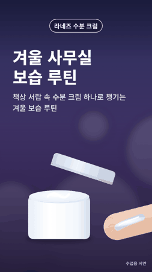
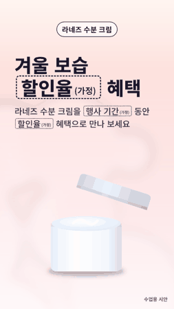
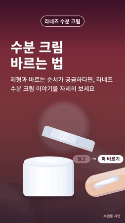

L
라네즈
광고 · 수업용 시안
오후마다 히터 바람에 얼굴이 당긴다면?

잘된 점첫 화면의 질문형 후킹이 크고 선명하고, 끝 화면의 회사 이름 → 헤드라인 → 버튼 순서가 깔끔해요.
쓴 패턴 · 근거A · 영상 형식 — 오래 돈 묶음 5개 중 3개 · 나머지 묶음 21개 중 8개
심사 결과보류: 사람 확인 (고친 횟수 2)
라네즈 수분 크림 · 건조함이 고민인 2030 직장인 · 패턴 출처: patterns_1125.md (공통광고_스킨케어.csv 26줄, 수집일 2026-11-22)

잘된 점첫 화면의 질문형 후킹이 크고 선명하고, 끝 화면의 회사 이름 → 헤드라인 → 버튼 순서가 깔끔해요.
쓴 패턴 · 근거A · 영상 형식 — 오래 돈 묶음 5개 중 3개 · 나머지 묶음 21개 중 8개
심사 결과보류: 사람 확인 (고친 횟수 2)

잘된 점밝은 분홍 배경에 짙은 글자라 대비가 좋고, 할인 숫자를 [할인율](가정)·[행사 기간](가정) 자리 표시로만 처리했어요.
쓴 패턴 · 근거B · 가격 할인·특가 제안 — 오래 돈 묶음 5개 중 4개 · 나머지 묶음 21개 중 11개
심사 결과보류: 사람 확인 (고친 횟수 2)

잘된 점"덜고 → 펴 바르기" 단계 표시가 중간에 실제로 움직여서 세 시안 중 가장 영상답고, 끝 화면의 "자세히 보기" 버튼도 눈에 잘 띄어요.
쓴 패턴 · 근거C · "자세히 보기"형 행동 버튼 — 오래 돈 묶음 5개 중 5개 · 나머지 묶음 21개 중 9개
심사 결과보류: 사람 확인 (고친 횟수 2)
그림을 누르면 15초 영상(mp4)이 열려요. 심사 자세한 내용과 사람이 확인할 것은 review_1125.md에 있어요.